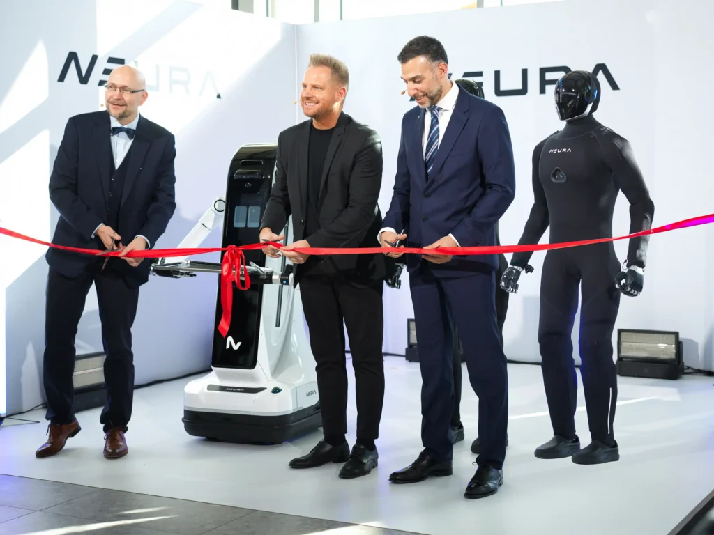

4NE1 Gen 4官网当前代际
NEURA Robotics · 双足人形 · 已发布
Gen 4有独立2026-10-22首发证据；官网预订页实际标Gen 3.5，其SDK和欧元估价不移植到Gen 4。官网所链V7 PDF封面明确为Gen 3，绝对数字不跨代回填。图片为官方 Gen 4 首发活动照片，右侧黑色整机为本型号，画面含人物及另一平台，不作为普遍交付证明。

完整规格与依据
身体规格
- 身高
- 待核实
缺失原因：来源代际不匹配。已渲染核对官网所链V7 PDF，封面明确标Gen 3，180 cm属旧代；Gen 4首发稿无绝对高度，不跨代回填；这是本次核验边界，不表示厂家从未披露或该功能不存在
本项资料核验 2026-10-24；相关链接不表示厂商从未披露。 - 整机重量
- 待核实
缺失原因：Gen 4首发稿仅确认比上一代轻20%，未提供基准重量/测试口径；不以旧表80 kg×80%估算64 kg；这是本次核验边界，不表示厂家从未披露或该功能不存在
本项资料核验 2026-10-24；相关链接不表示厂商从未披露。 - 自由度
- 待核实
缺失原因：来源代际不匹配。V7 PDF封面明确标Gen 3，55 DoF属旧代；Gen 4首发稿Smart Limbs没有整机DoF，不能继承；这是本次核验边界，不表示厂家从未披露或该功能不存在
本项资料核验 2026-10-24；相关链接不表示厂商从未披露。 - 末端执行器
- 灵巧手；Smart Limbs局部反射控制 已核对原文 · 厂商资料
首发稿Gen 4专属段明确advanced hands与肢体局部响应；手部DoF/驱动结构未说明，不移用V7 PDF的12 DoF
本项资料核验 2026-10-24
运动与操作
- 操作负载
- 待核实
缺失原因：来源代际不匹配。V7封面明确是Gen 3，臂20 kg/特定腿支撑100 kg不能当Gen 4额定值；Gen 4首发稿无操作负载；这是本次核验边界，不表示厂家从未披露或该功能不存在
本项资料核验 2026-10-24；相关链接不表示厂商从未披露。 - 移动速度
- 待核实
缺失原因：来源代际不匹配。V7封面明确标Gen 3，5 km/h属旧代；Gen 4首发稿更流畅运动不等于本代m/s；这是本次核验边界，不表示厂家从未披露或该功能不存在
本项资料核验 2026-10-24；相关链接不表示厂商从未披露。
电池与工作
- 工作时间
- 待核实
缺失原因：来源代际不匹配。V7明确属Gen 3且标24/7 Operating Time；它既不能证明Gen 4规格，也不能当单电池24小时；这是本次核验边界，不表示厂家从未披露或该功能不存在
本项资料核验 2026-10-24；相关链接不表示厂商从未披露。 - 电池能量
- 待核实
缺失原因：Gen 4首发稿没有电池Wh；Gen 3.5预订页的high-capacity battery不是能量数据也不属该代；这是本次核验边界，不表示厂家从未披露或该功能不存在
本项资料核验 2026-10-24；相关链接不表示厂商从未披露。 - 电池容量
- 待核实
缺失原因：Gen 4首发稿无Ah/mAh与电压；不根据前代描述或重量反推；这是本次核验边界，不表示厂家从未披露或该功能不存在
本项资料核验 2026-10-24；相关链接不表示厂商从未披露。
感知与开发
- 感知配置
- 3D视觉、触觉、力觉、声音及本体状态输入 已核对原文 · 厂商资料
首发稿Gen 4专属Neuron AI段与当前产品页列多模态感知；未列传感器型号/数量，不移用旧V7可选安全传感器作为标配
本项资料核验 2026-10-24 - 计算平台
- 待核实
缺失原因：已确认NEURON AI/Perception-Language-Action模型及本地运行，但这是软件模型，不是CPU/GPU或算力配置；未取得Gen 4机载硬件型号；这是本次核验边界，不表示厂家从未披露或该功能不存在
本项资料核验 2026-10-24；相关链接不表示厂商从未披露。 - 二次开发
- 待核实
缺失原因：来源代际不匹配。已找到Python SDK、ROS 2、C++ SDK/NEURA Sync，但预订页明确写Gen 3.5；不能拿它证明Gen 4开发权限；这是本次核验边界，不表示厂家从未披露或该功能不存在
本项资料核验 2026-10-24；相关链接不表示厂商从未披露。
采购信息
- 美元报价
- 待核实
缺失原因：已找到€98,000（1–19台）/€60,000（20+台）估价，但预订页明确为Gen 3.5且未含税运；既非Gen 4报价，也非美元，€100仅订金；这是本次核验边界，不表示厂家从未披露或该功能不存在
本项资料核验 2026-10-24；相关链接不表示厂商从未披露。 - 人民币报价
- 待核实
缺失原因：已找到的欧元预订估价属于Gen 3.5，不是Gen 4人民币整机报价；不跨代换汇；这是本次核验边界，不表示厂家从未披露或该功能不存在
本项资料核验 2026-10-24；相关链接不表示厂商从未披露。